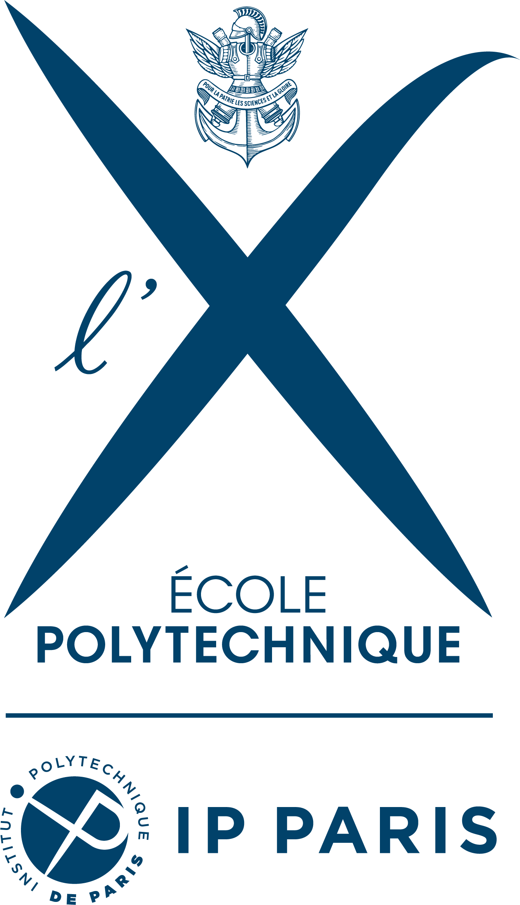
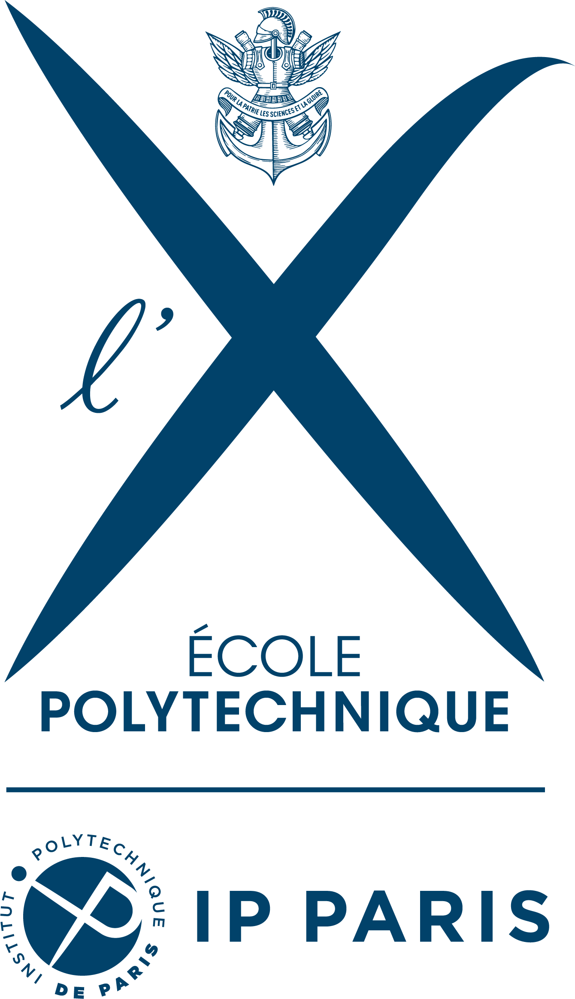
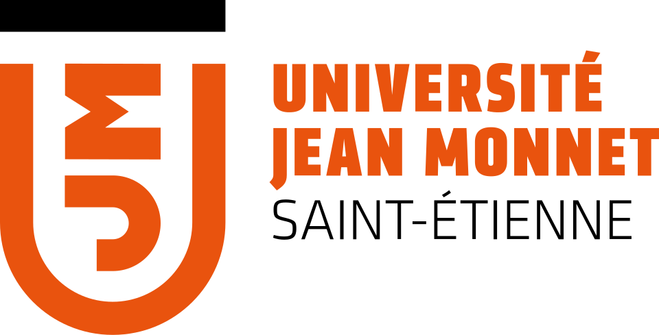
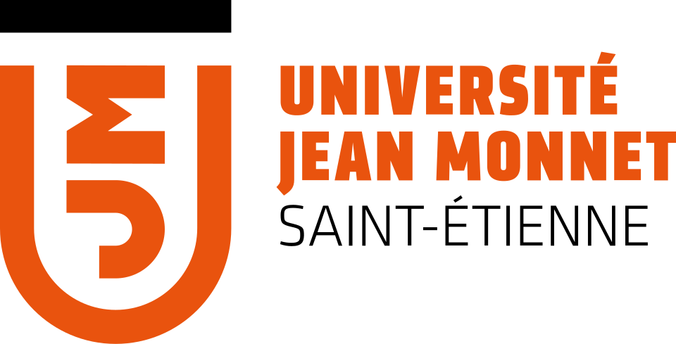
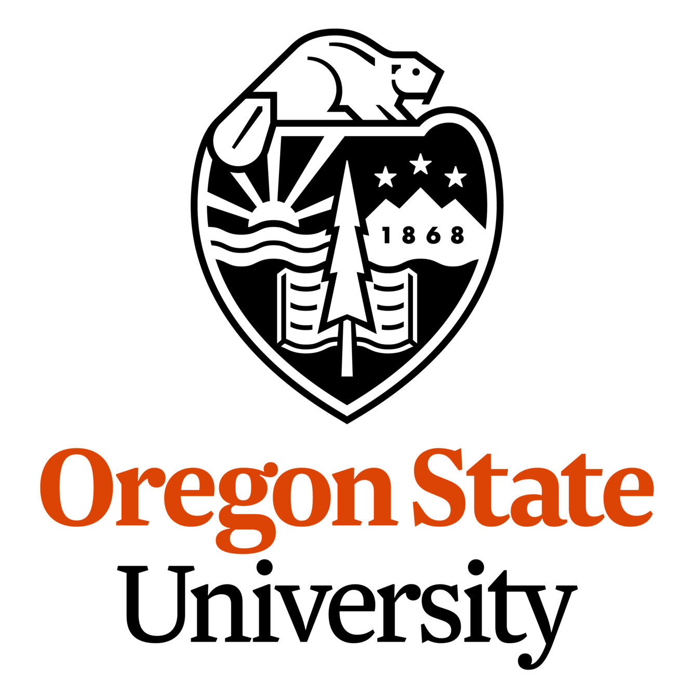

Ugo Labbé


PhD Researcher in Multi-Fidelity Gaussian Processes
PhD Researcher in Multi-Fidelity Gaussian Processes
 Michelin | Institut Polytechnique (CMAP) | INRIA Côte d'Azur
Michelin | Institut Polytechnique (CMAP) | INRIA Côte d'Azur
My current research focuses on Multi-Fidelity Gaussian Processes applied to time series prediction (as well as multi-output) for complex industrial processes at Michelin. I work on improving prediction and uncertainty quantification by combining high-fidelity data with lower-fidelity simulation to predict process outcomes. My thesis Director is Josselin Garnier (CMAP) and co-supervised by Mickaël Binois (INRIA Côte d'Azur), Amina Chorfi and Mayra Hernandez (Michelin).
Gaussian Processes Multi-Fidelity Modeling Time SeriesI am a Machine Learning researcher with a strong background in Statistics and Data Science. I specialize in bridging the gap between theoretical machine learning and industrial applications with a focus on uncertainty quantification. Feel free to reach out to me through the following channels:
 Data Analyst Apprentice at Martin Belaysouds
Data Analyst Apprentice at Martin Belaysouds
M.Sc. Machine Learning & Data Mining
 TU Wien (Austria) & Université Jean Monnet (France) | 2023-2025
TU Wien (Austria) & Université Jean Monnet (France) | 2023-2025
B.S. Statistics
Oregon State University (USA) | 2022-2023
Associate Degree in Statistics & Business Intelligence
 Université Lyon 2 (France) | 2020-2022
Université Lyon 2 (France) | 2020-2022